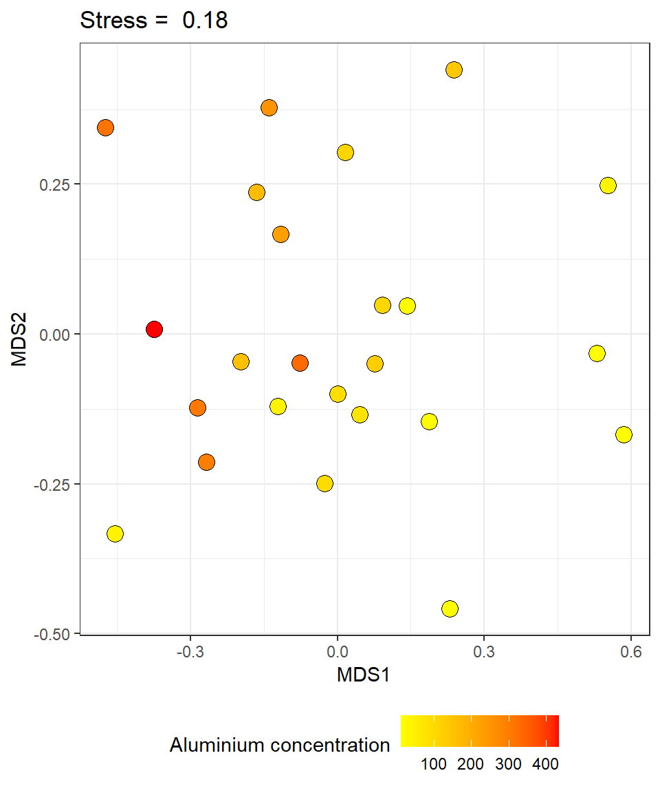
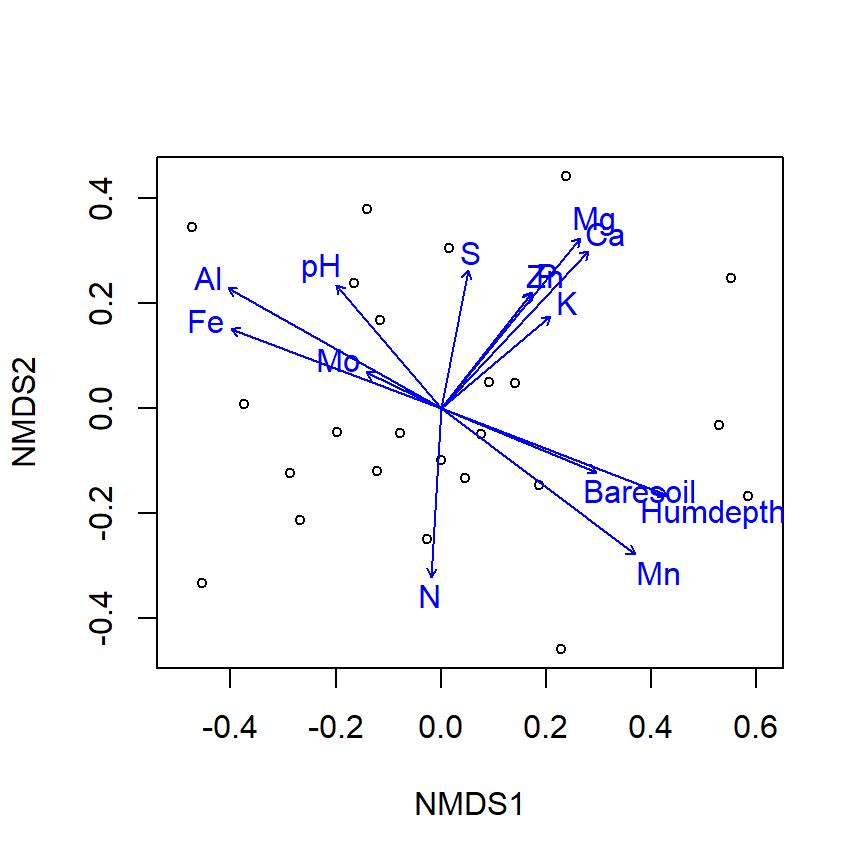
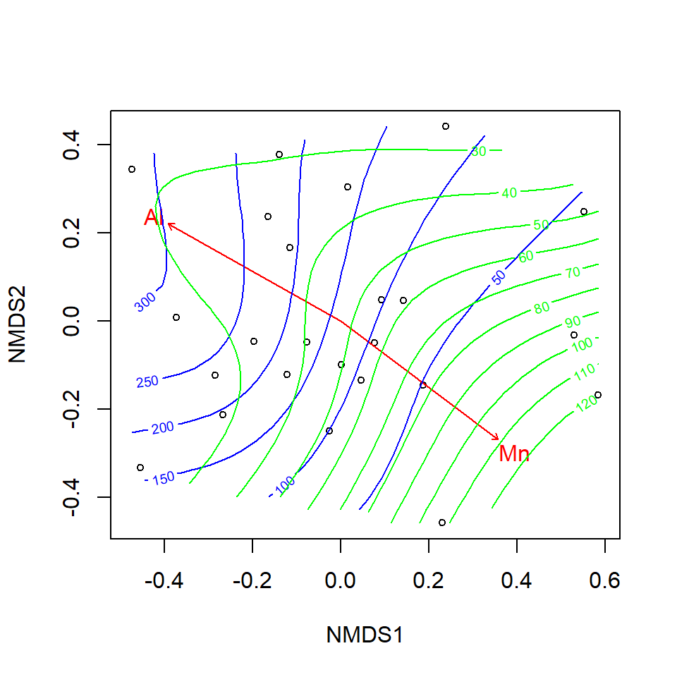
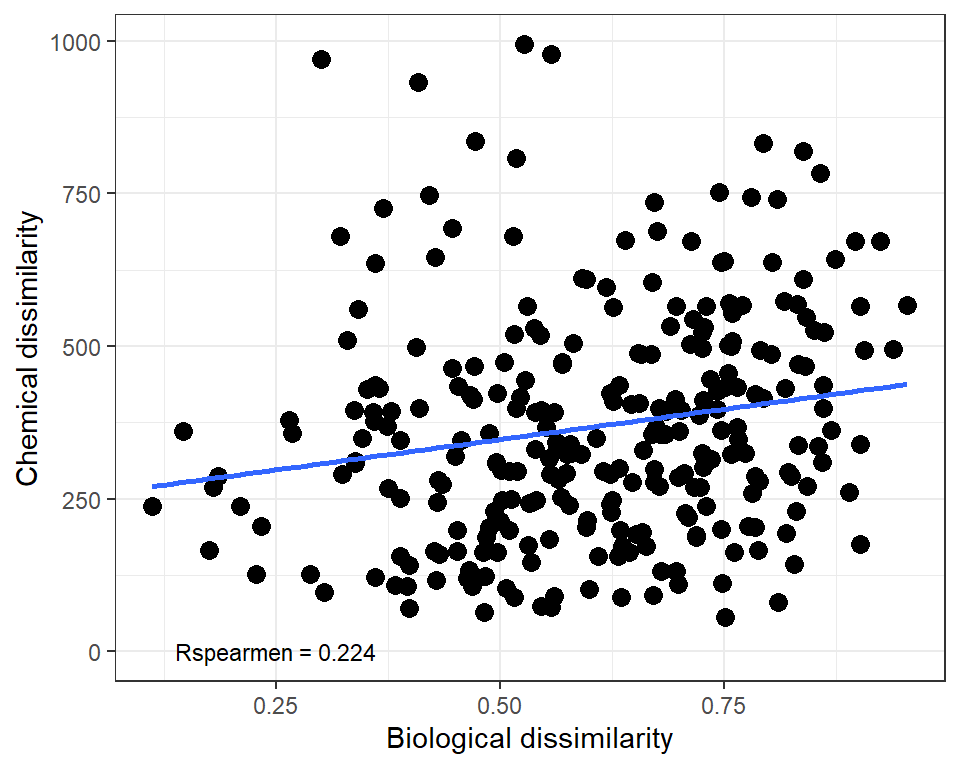
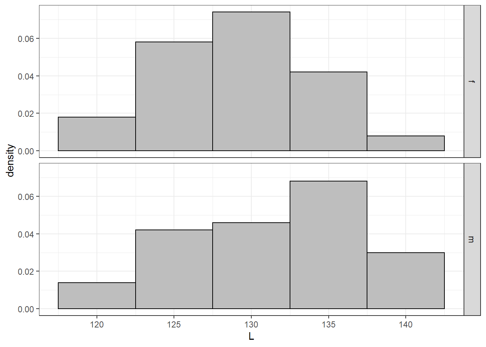
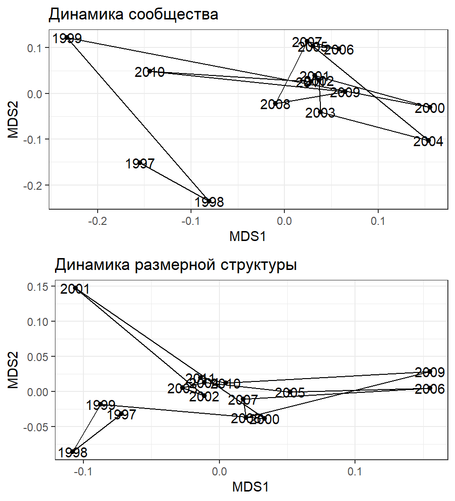
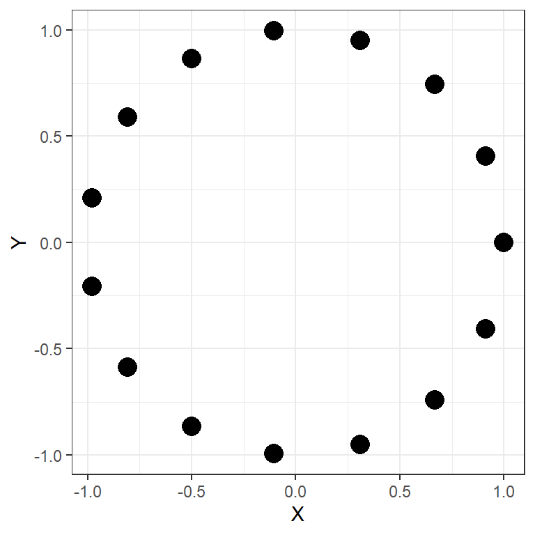

- Количественно оценить степень взаимосвязи между несколькими наборами данных.
- Протестировать гипотезу о наличии в данных некоторого специфического паттерна, используя метод модельных матриц.
- Найти оптимальное сочетание признаков, не вошедших в ординацию, которые “объясняют” характер взаиморасположения точек на ординации
Вы сможете
Ординация растительности на пастбищах северных оленей
Данные из работы
Väre, H., Ohtonen, R. and Oksanen, J. (1995)

из Väre, Ohtonen & Oksanen (1995)
library(vegan) library(ggplot2) data(varespec) data(varechem)
Два набора данных:
varespec- Описание растительности (обилия отдельных видов)varechem- Параметры среды на участках (Концентрации веществ)
Задание
- Используя средства пакета “ggplot2”, постройте ординацию описаний растительности в осях MDS.
- Раскрасьте точки в соответствии с концентрацией Al.
- На диаграмме приведите величину стресса для данной ординации
Hint. В качестве меры различия используйте коэффициент Брея-Куртиса
Решение
veg_ord <- metaMDS(varespec, trace = FALSE) veg_MDS <- as.data.frame(veg_ord$points)
library(ggplot2)
Pl_mds <-
ggplot(veg_MDS, aes(x = MDS1, y = MDS2,
fill = varechem$Al)) +
geom_point(shape=21, size =4)+
ggtitle(paste("Stress = ", round(veg_ord$stress, 2))) +
theme_bw() +
theme(legend.position = "bottom") +
labs(fill = "Aluminium concentration") +
scale_fill_gradient(high = "red", low = "yellow")

Анализ связи с переменными c помощью функции envfit()
Задание: Постройте рисунок, который будет отражать связь полученной ординации с изученными переменными среды (датасет varechem)
Решение
env_fit <- envfit(veg_ord ~ ., data = varechem)
ordiplot(veg_ord, display = "site") plot(env_fit)

Анализ связи с переменными c помощью функции ordisurf()
Задание: Постройте рисунок, который будет отражать связь полученной ординации с концентрацией Mn и Al
Решение
env_fit2 <- envfit(veg_ord ~ Al + Mn, data = varechem) plot(veg_ord, display = "site") plot(env_fit2, col = "red") ordisurf(veg_ord, varechem$Al, add = TRUE, col="blue") ordisurf(veg_ord, varechem$Mn, add = TRUE, col="green")

Вопрос:
Сможем ли мы на основе данных, полученных с помощью функций envfit() или ordisurf(), построить оптимальную модель, описывающую связь структуры сообществ и параметров среды?
Тест Мантела
Постановка проблемы
Нам необходимо оценить связаны ли, в целом, два набора данных и оценить силу этой связи
Похожие задачи
Зависит ли растительность от параметров среды?
Связаны ли морфологические признаки и экспрессия генов?
Связаны ли характеристики паразитов и хозяев?
и т.п.
Метод сравнения сопряженных матриц, описывающих попарные расстояния (или сходства), был предложен Натаном Мантелом

Корреляция матриц сходства/различия
Если две матрицы сопряжены, то меры сходства/различия в одной матрице должны быть подобны мерам сходства/различия в другой матрице
dist_com <- vegdist(varespec, method = "bray") dist_chem <- vegdist(varechem, method = "euclidean")
## `geom_smooth()` using formula 'y ~ x'

Корреляция матриц сходства/различия

Вопрос: Как можно определить статистическую значимость полученного коэффициента корреляции?
- Внимание! Значимость этой корреляции нельзя оценивать как для обычной корреляции, например функцией
cor.test()или по таблице пороговых значений коэффициента корреляции.
Пермутационные методы оценки статистической значимости
– Друг мой, – отвечал Диоталлеви, – ты никогда ничего не поймешь. Да, это правда, что Тора – я имею в виду, разумеется, видимую Тору – есть лишь одна из перестановок-пермутаций букв, составляющих вековечную Тору, какою создал ее Творец и какой ее дал Адаму. Умберто Эко
“Маятник Фуко”
Тестирование простейшей гипотезы
Создадим две выборки из популяций с нормальным распределением признака, с заведомо отличающимися средними значениями
set.seed(12345) male <- rnorm(100, 130, 5) female <- rnorm(100, 129,5)
Частотное распределение этих двух выборок выглядит так

Сравним две выборки с помощью t-критерия Стьюдента
Какая статистика используется в t-критерии?
- \(t= \frac {X1-X2} {SE}\)
Сравним две выборки с помощью t-критерия Стьюдента
Результаты
t <- t.test(male, female) t
## ## Welch Two Sample t-test ## ## data: male and female ## t = 3, df = 196, p-value = 0.009 ## alternative hypothesis: true difference in means is not equal to 0 ## 95 percent confidence interval: ## 0.516 3.484 ## sample estimates: ## mean of x mean of y ## 131 129
Что означает выражение p-value=0.009?
Пермутационный подход к тестированию
Если две сравниваемые выборки взяты из одной совокупности (справедлива \(H_0\)), то обмен элементами между ними ничего не изменит. Степень различия между выборками (значение статистики) останется более или менее тем же самым.
Пермутации - это перестановки.
Полное количество пермутаций (при равном количестве объектов в двух группах) будет вычисляться по следующей формуле:
\[K= \frac{(2n)!}{(2!(n!)^2)}\]
При большом объеме выборок это огромное число!
В таких случаях используют метод Монте-Карло.
Пермутационный метод вручную
Применим этот метод (на очень примитивном уровне) к нашим двум выборкам, описывающим размеры мальчиков и девочек (векторы male и female).
head (male)
## [1] 133 134 129 128 133 121
head (female)
## [1] 130 123 131 122 130 126
Пермутационный метод вручную
Введем статистику
\[t= \frac {X_1 - X_2}{ \sqrt {SE_1^2+SE_2^2}}\]
Вычислим значение этой статистики при сравнении векторов male и female
SE_m <- sd(male) / sqrt(length(male)) SE_f <- sd(female) / sqrt(length(female)) t_initial <- (mean(male) - mean(female))/sqrt(SE_m^2 + SE_f^2)
Полученное значение t = 2.657
Пермутационный метод вручную
При пермутациях мы должны поменять местами, например, male[10] = 125.403 и female[20] = 128.655. А еще лучше поменять случайное количество элементов одной выборки на случайное количество элементов из другой выборки.
f <- female m <- male num_perm <- sample(1:100,1) order_m <- sample (1:100, num_perm) order_f <- sample (1:100, num_perm) f[order_f] <- male[order_f] m[order_m] <- female[order_f] SE_m <- sd(m) / sqrt(length(m)) SE_f <- sd(f) / sqrt(length(f)) t_p=(mean(m) - mean(f))/sqrt(SE_m^2 + SE_f^2)
После этой пермутации у нас получилось значение \(t_{perm}\) = -2.332, а исходное значение было t = 2.657
Пермутационный метод вручную
Теперь нужно провести процедуру пермутации много раз и получить распределение значений статистики \(t_{perm}\)
Nperm=10000
tperm <- rep(NA, Nperm)
set.seed(12345)
for (i in 1:(Nperm-1))
{
BOX <- c(male,female)
ord <-sample(1:200, 200)
f <- BOX[ord[1:100]]
m <- BOX [ord[101:200]]
SE_m <- sd(m) / sqrt(length(m))
SE_f <- sd(f) / sqrt(length(f))
tperm[i]=(mean(m) - mean(f))/sqrt(SE_m^2 + SE_f^2)
}
head(tperm)
## [1] -0.508 -0.420 -2.240 -0.781 0.901 -1.152
Пермутационный метод вручную
Посмотрим в конец этого вектора
tail (tperm)
## [1] -0.4985 1.6344 -0.7864 -0.0249 1.0292 NA
Последнее 10000-е значение не заполнено!
В него надо вписать исходное, полученное до пермутаций, значение t = 2.657. Это необходимо, так как мы тестируем гипотезу о принадлежности этого значения случайному распределению.
tperm [Nperm] <- t_initial
Пермутационный метод вручную
Построим частотное распределение пермутированных значений статистики \(t_{perm}\)

Пермутационный метод вручную
Рассчитаем величину уровня значимости \(p_{perm}= \frac{N_{t_{perm}>=t}}{N_{perm}}\)
p_perm <- length(tperm[tperm >= t_initial] | tperm[tperm <= -t_initial] ) / Nperm
Мы получили уровень значимости \(p_{perm}\) = 0.005
Сравним его с уровнем значимости, вычисленным с помощью параметрического t-критерия p=0.009
Они оба близки и оба выявляют значимые различия!
Пермутационная оценка коэффициента корреляции
Создадим два скоррелированных вектора
library(MASS) set.seed(1234567) mu <- c(10, 20) #Вектор средних значений Sigma <- matrix(.7, nrow=2, ncol=2) diag(Sigma) <- c(1, 3) # Sigma Ковариационная матрица dat <- as.data.frame(mvrnorm(n=100, mu=mu, Sigma=Sigma)) # Датафрейм с двумя скоррелированными переменными cor.test(dat$V1, dat$V2, method = "spearman")
## ## Spearman's rank correlation rho ## ## data: dat$V1 and dat$V2 ## S = 87860, p-value = 0.0000009 ## alternative hypothesis: true rho is not equal to 0 ## sample estimates: ## rho ## 0.473
Пермутационная оценка коэффициента корреляции
library(coin)
## Loading required package: survival
spearman_test( V1 ~ V2, data = dat, distribution = approximate(B=9999))
## ## Approximative Spearman Correlation Test ## ## data: V1 by V2 ## Z = 5, p-value <0.0001 ## alternative hypothesis: true rho is not equal to 0
Проверка статистической значимости Мантеловской корреляции
Для оценки достоверности Мантеловской корреляции применяется пермутационная процедура. Эта процедура реализована в функции mantel() из пакета vegan
options(digits=4) mant <- mantel(dist_com, dist_chem, method="pearson", permutations = 999) mant
## ## Mantel statistic based on Pearson's product-moment correlation ## ## Call: ## mantel(xdis = dist_com, ydis = dist_chem, method = "pearson", permutations = 999) ## ## Mantel statistic r: 0.182 ## Significance: 0.027 ## ## Upper quantiles of permutations (null model): ## 90% 95% 97.5% 99% ## 0.109 0.150 0.184 0.202 ## Permutation: free ## Number of permutations: 999
Вероятность наблюдать такое значение при условии, что верна \(H_0\), равна 0.027
Частная Мантеловская корреляция
из Väre, Ohtonen & Oksanen (1995)
В материале есть одна проблема
- сходство между отдельными описаниями может быть обусловлено не только их биологическими свойствами, но и тем, что они просто располагаются ближе друг к другу в пространстве.
- Корреляция между биологическими признаками и химическими должна оцениваться при учете еще одной матрицы - Матрицы географических расстояний
Частная Мантеловская корреляция
mantel_partial <- mantel.partial(xdis = dist_com, ydis = dist_chem, zdis = dist_geo, method = "pearson", permutations = 9999) mantel_partial
## ## Partial Mantel statistic based on Pearson's product-moment correlation ## ## Call: ## mantel.partial(xdis = dist_com, ydis = dist_chem, zdis = dist_geo, method = "pearson", permutations = 9999) ## ## Mantel statistic r: 0.182 ## Significance: 0.023 ## ## Upper quantiles of permutations (null model): ## 90% 95% 97.5% 99% ## 0.113 0.144 0.178 0.215 ## Permutation: free ## Number of permutations: 9999
Подбор оптимальной модели: процедура BIO-ENV
Постановка задачи
Необходимо выбрать предикторы, которые наилучшим образом объясняют поведение биологической системы.
\(NB!\) Эта задача аналогична задачам, ставящимся в регрессионном анализе.
К. Кларком и M. Эйнсвортом был предложен метод BIO-ENV (Clarke, Ainsworth, 1993). Это непараметрический аналог пошагового регрессионного анализа.
Процедура BIO-ENV
В этом анализе есть две сцепленные матрицы:
- Зависимая матрица (BIO) - матрица геоботанических описаний.
- Матрица-предиктор (ENV) - матрица химических параметров.
Алгоритм процедуры BIO-ENV
- Вычисляется матрица взаимных расстояний между объектами для зависимой матрицы \(D_{BIO}\). Используются все ее переменные.
- Матрица-предиктор имеет \(p\) переменных. Вычисляются все возможные матрицы взаимных расстояний между объектами для всех возможных комбинаций признаков матрицы ENV - \(D_{ENV_i}\). ВНИМАНИЕ! Таких матриц будет \(2^p-1\).
- Между каждой из матриц \(D_{ENV_i}\) и матрицей \(D_{BIO}\) вычисляется мантеловская корреляция.
- Находится матрица \(D_{ENV_i}\), имеющая максимальное значение мантеловской корреляции.
- Выводятся признаки матрицы ENV, на основе которых получена максимально подобная матрица \(D_{ENV_i}\).
Функция bioenv() из пакета vegan
BioEnv <- bioenv(varespec, varechem, method = "spearman", index = "bray")
## 16383 possible subsets (this may take time...)
BioEnv
## ## Call: ## bioenv(comm = varespec, env = varechem, method = "spearman", index = "bray") ## ## Subset of environmental variables with best correlation to community data. ## ## Correlations: spearman ## Dissimilarities: bray ## Metric: euclidean ## ## Best model has 5 parameters (max. 14 allowed): ## N P Al Mn Baresoil ## with correlation 0.4494
Оценка достоверности результатов
Внимание! Не надо оценивать достоверность результата процедуры BIO-ENV путем оценки достоверности мантеловской корреляции между \(D_{BIO}\) и матрицей, полученной в результате применения BIO-ENV \(D_{ENV}\). Это будет жульничеством, так как это уже максимально подобная матрица.
Для оценки достоверности полученного результата применяется пермутационный метод, основанный на многократном повторении самой процедуры BIO-ENV.
Внимание! Это занимает очень много времени
Алгоритм оценки достоверности применения процедуры BIO-ENV

- Применяем процедуру BIO-ENV и находим лучшее сочетание переменных в матрице-предикторе (ENV).
- Пермутируем зависимую матрицу (BIO).
- Применяем процедуру BIO-ENV к пермутированной матрице и вновь находим наилучшее сочетание и записываем значение мантеловской корреляции.
- Повторяя шаги 2 и 3 многократно, получаем распределение пермутационных статистик.
- Вычисляем уровень значимости способом, принятым при пермутационной оценке.
Трактовка результатов BIO-ENV?
Задание: Постройте ординацию описаний в осях nMDS и отразите на этой диаграмме векторы, соответствующие результатам процедуры BIO-ENV
Решение
plot(veg_ord, display = "site") plot(envfit(veg_ord ~ N + P + Al + Mn + Baresoil, data = varechem ))

Тестирование гипотезы о соответствии ожидаемому паттерну: метод модельных матриц
Пример: Динамика сообществ мидиевых банок
Существуют ли направленные многолетние изменения в размерной структуре поселений мидий и в структуре сообщества (Khaitov, 2013)?
com <- read.csv("data/mussel_beds.csv",
sep=';', header = T)
ascam <- read.csv("data/ASCAM.csv",
sep=';', header = T)
com — усредненные данные по обилию 12 видов для 3 мидиевых банок (Vor2, Vor4, Vor5).
ascam — (averaged size class abundance matrix) средние плотности поселения мидий разных размеров (6] размерных классов)

Задание

Рассмотрите многолетние изменения структуры сообщества и размерной структуры мидий на мидиевой банке Vor2
Постройте рисунок, аналогичный приведенному на данном слайде
Hint 1. Прологарифмируйте данные.
Hint 2. Примените наиболее подходящий коэффициент для оценки различий между объектами.
Решение
Ординация
library(vegan) log_com <- decostand(com[,-c(1:3)], method = "log") vor2_log_com <- log_com[com$Bank == "Vor2",] log_ascam <- decostand(ascam[, -c(1:2)], method = "log") mds_vor2_com <- as.data.frame(metaMDS(vor2_log_com)$points) vor2_log_ascam <- log_ascam[ascam$Bank == "Vor2",] mds_vor2_ascam <- as.data.frame(metaMDS(vor2_log_ascam, distance = "euclid" )$points)
Решение
График ординации
library(ggplot2)
library(gridExtra)
theme_set(theme_bw())
Pl1 <- ggplot(mds_vor2_com, aes(x=MDS1, y=MDS2)) + geom_point() +
geom_path() + geom_text(label = com$Year[com$Bank == "Vor2"]) +
ggtitle("Динамика сообщества")
Pl2 <- ggplot(mds_vor2_ascam, aes(x=MDS1, y=MDS2)) + geom_point() +
geom_path() + geom_text(label = com$Year[com$Bank == "Vor2"]) +
ggtitle("Динамика размерной структуры")
grid.arrange(Pl1, Pl2)
Градиентная модельная матрица
Это матрица Евклидовых расстояний между временными точками.
gradient_model <- vegdist(com$Year[com$Bank == "Vor2"], method="euclidian") gradient_model
## 1 2 3 4 5 6 7 8 9 10 11 12 13 14 ## 2 1 ## 3 2 1 ## 4 3 2 1 ## 5 4 3 2 1 ## 6 5 4 3 2 1 ## 7 6 5 4 3 2 1 ## 8 7 6 5 4 3 2 1 ## 9 8 7 6 5 4 3 2 1 ## 10 9 8 7 6 5 4 3 2 1 ## 11 10 9 8 7 6 5 4 3 2 1 ## 12 11 10 9 8 7 6 5 4 3 2 1 ## 13 12 11 10 9 8 7 6 5 4 3 2 1 ## 14 13 12 11 10 9 8 7 6 5 4 3 2 1 ## 15 14 13 12 11 10 9 8 7 6 5 4 3 2 1
Тестируем гипотезу о наличии градиента
Протестируем гипотезу о наличии временного градиента с помощью теста Мантела
dist_vor2_com <- vegdist(vor2_log_com, method = "bray") dist_vor2_ascam <- vegdist(vor2_log_ascam, method = "euclidean")
1) Наличие градиента в структуре сообщества
mantel(dist_vor2_com, gradient_model)
## ## Mantel statistic based on Pearson's product-moment correlation ## ## Call: ## mantel(xdis = dist_vor2_com, ydis = gradient_model) ## ## Mantel statistic r: 0.264 ## Significance: 0.028 ## ## Upper quantiles of permutations (null model): ## 90% 95% 97.5% 99% ## 0.180 0.221 0.265 0.315 ## Permutation: free ## Number of permutations: 999
Тестируем гипотезу о наличии градиента
2) Наличие градиента в размерной структуре мидий
mantel(dist_vor2_ascam, gradient_model)
## ## Mantel statistic based on Pearson's product-moment correlation ## ## Call: ## mantel(xdis = dist_vor2_ascam, ydis = gradient_model) ## ## Mantel statistic r: 0.516 ## Significance: 0.001 ## ## Upper quantiles of permutations (null model): ## 90% 95% 97.5% 99% ## 0.161 0.218 0.262 0.312 ## Permutation: free ## Number of permutations: 999
Прослеживается ли связь между размерной структурой мидий и структурой сообщества?
Не самое правильное решение
mantel(dist_vor2_com, dist_vor2_ascam)
## ## Mantel statistic based on Pearson's product-moment correlation ## ## Call: ## mantel(xdis = dist_vor2_com, ydis = dist_vor2_ascam) ## ## Mantel statistic r: 0.521 ## Significance: 0.009 ## ## Upper quantiles of permutations (null model): ## 90% 95% 97.5% 99% ## 0.304 0.383 0.440 0.501 ## Permutation: free ## Number of permutations: 999
Прослеживается ли связь между размерной структурой мидий и структурой сообщества?
Более корректное решение
mantel.partial(dist_vor2_com, dist_vor2_ascam, gradient_model)
## ## Partial Mantel statistic based on Pearson's product-moment correlation ## ## Call: ## mantel.partial(xdis = dist_vor2_com, ydis = dist_vor2_ascam, zdis = gradient_model) ## ## Mantel statistic r: 0.465 ## Significance: 0.025 ## ## Upper quantiles of permutations (null model): ## 90% 95% 97.5% 99% ## 0.297 0.386 0.460 0.532 ## Permutation: free ## Number of permutations: 999
Могут быть и более сложные модельные матрицы
Проверим, нет ли в динамике размерной структуры мидий на банке Vor2 циклических изменений, которые предсказываются некоторыми моделями динамики плотных поселений (Наумов, 2006; Khaitov, Lentsman, 2016)

Циклическая модельная матрица
## 1 2 3 4 5 6 7 8 9 10 11 12 13 14 ## 2 0 ## 3 1 0 ## 4 1 1 0 ## 5 1 1 1 0 ## 6 2 1 1 1 0 ## 7 2 2 1 1 1 0 ## 8 2 2 2 1 1 1 0 ## 9 2 2 2 2 1 1 1 0 ## 10 2 2 2 2 2 1 1 1 0 ## 11 2 2 2 2 2 2 1 1 1 0 ## 12 1 2 2 2 2 2 2 1 1 1 0 ## 13 1 1 2 2 2 2 2 2 1 1 1 0 ## 14 1 1 1 2 2 2 2 2 2 1 1 1 0 ## 15 0 1 1 1 2 2 2 2 2 2 1 1 1 0
Выявляется ли циклическая составляющая в динамике размерной структуры?
mantel(dist_vor2_ascam, cycl_model)
## ## Mantel statistic based on Pearson's product-moment correlation ## ## Call: ## mantel(xdis = dist_vor2_ascam, ydis = cycl_model) ## ## Mantel statistic r: 0.173 ## Significance: 0.011 ## ## Upper quantiles of permutations (null model): ## 90% 95% 97.5% 99% ## 0.0912 0.1213 0.1396 0.1721 ## Permutation: free ## Number of permutations: 999
Циклическая составляющая есть, но…
Более корректная оценка
mantel.partial(dist_vor2_ascam, cycl_model, gradient_model)
## ## Partial Mantel statistic based on Pearson's product-moment correlation ## ## Call: ## mantel.partial(xdis = dist_vor2_ascam, ydis = cycl_model, zdis = gradient_model) ## ## Mantel statistic r: -0.137 ## Significance: 0.94 ## ## Upper quantiles of permutations (null model): ## 90% 95% 97.5% 99% ## 0.111 0.142 0.177 0.198 ## Permutation: free ## Number of permutations: 999
Мы не можем говорить о наличии столь длительного цикла.
При данной длине временного ряда нельзя отличить цикл с большим периодом от направленного изменения.
Можно обсуждать только циклы с периодом не более половины длины временного ряда.
Summary
- Степень сопряженности двух наборов признаков можно оценивать с помощью теста Мантела.
- Оценка достоверности теста Мантела и корреляций с признаками, вычисленными в процедуре
envfit()проводится пермутационным методом - С помощью процедуры
BIO-ENVможно выявить набор переменных в матрице-предикторе, которые обеспечивают наибольшее сходство с зависимой матрицей.
Другое программное обеспечение
PRIMER 6.
Здесь реализована расширенная процедура BEST.
Она позволяет проводить не только полный перебор всех переменных в матрице-предикторе (Bio-Env), но и оптимизировать эту процедуру (BVStep). Кроме того, есть возможность оценивать достоверность результатов анализа. Но работает так же медленно.
Что почитать
- Oksanen, J., 2011. Multivariate analysis of ecological communities in R: vegan tutorial. R package version 2–0.
- Clarke, K. R & Ainsworth, M. 1993. A method of linking multivariate community structure to environmental variables. Marine Ecology Progress Series, 92, 205–219.
- Clarke, K. R., Gorley R. N. (2006) PRIMER v6: User Manual/Tutorial. PRIMER-E, Plymouth.
- Legendre P., Legendre L. (2012) Numerical ecology. Second english edition. Elsevier, Amsterdam. (В этом издании приводятся ссылки на реализацию методов в R)